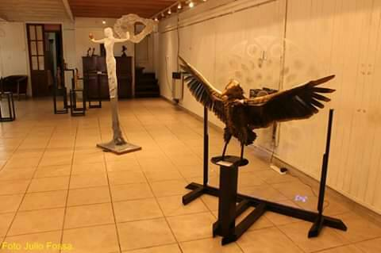

Esculturas
Eh dejado una marca indeleble en mi ciudad Natal de Capilla del Monte, Cordoba con mis esculturas, cada una de ellas contando una historia y embelleciendo los espacios públicos. Su arte es un reflejo de su pasión y dedicación, transformando lugares comunes en sitios de interés y asombro. Mis esculturas son realizadas en hierro y ferrocemento.
Proyectos Destacados en Capilla del Monte, Córdoba, Argentina:
1.El ET en la Calle Techada: Una escultura emblemática que atrae la curiosidad y la admiración de los visitantes.
2.El Cóndor en la Entrada del Cerro Uritorco: Una impresionante obra que simboliza la majestuosidad de la fauna local.
3.El Dragón en la "Calle del Dragón": Una monumental escultura sobre un estudio de arquitectura que ha dado nombre a la calle, destacándose como un ícono local.
